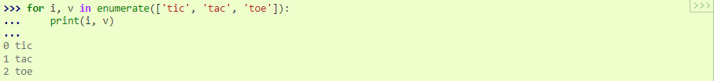

O tipo de dados de lista tem mais alguns métodos. Aqui estão todos os métodos de objetos de lista:
lista. anexar ( x )
Adicione um item ao final da lista. Equivalente a .a[len(a):] = [x]
lista. estender ( iterável )
Estenda a lista anexando todos os itens do iterável. Equivalente a .a[len(a):] = iterable
lista. inserir ( i , x )
Insira um item em uma determinada posição. O primeiro argumento é o índice do elemento antes do qual inserir, portanto, insere na frente da lista e é equivalente a .a.insert(0, x)a.insert(len(a), x)a.append(x)
lista. remover ( x )
Remova o primeiro item da lista cujo valor seja igual a x . Ele levanta um ValueErrorse não houver tal item.
lista. pop ( [ i ] )
Remova o item na posição especificada na lista e devolva-o. Se nenhum índice for especificado, a.pop()remove e retorna o último item da lista. (Os colchetes ao redor do i na assinatura do método indicam que o parâmetro é opcional, não que você deva digitar colchetes nessa posição. Você verá essa notação com frequência na Referência da Biblioteca Python.)
lista. claro ( )
Remova todos os itens da lista. Equivalente a .del a[:]
lista. índice ( x [ , início [ , fim ] ] )
Retorna o índice baseado em zero na lista do primeiro item cujo valor é igual a x . Gera um ValueErrorse não houver tal item.Os argumentos opcionais start e end são interpretados como na notação da fatia e são usados para limitar a pesquisa a uma subsequência específica da lista. O índice retornado é calculado em relação ao início da sequência completa, em vez do argumento inicial .
lista. conta ( x )
Retorna o número de vezes que x aparece na lista.
lista. sort ( * , key = None , reverse = False )
Classifique os itens da lista no local (os argumentos podem ser usados para personalização de classificação, consulte sorted()a explicação).
lista. inverso ( )
Inverta os elementos da lista no lugar.
lista. copiar ( )
Retorne uma cópia rasa da lista. Equivalente a a[:].Um exemplo que usa a maioria dos métodos de lista:
Você deve ter notado que métodos como insert, removeou sortque apenas modificam a lista não têm valor de retorno impresso – eles retornam o padrão None.Este é um princípio de design para todas as estruturas de dados mutáveis em Python.
Outra coisa que você pode notar é que nem todos os dados podem ser classificados ou comparados. Por exemplo, não classifica porque inteiros não podem ser comparados a strings e None não pode ser comparado a outros tipos. Além disso, existem alguns tipos que não possuem uma relação de ordenação definida. Por exemplo, não é uma comparação válida.[None, 'hello', 10]3+4j < 5+7j
Usando listas como pilhas
Os métodos de lista tornam muito fácil usar uma lista como uma pilha, onde o último elemento adicionado é o primeiro elemento recuperado (“último a entrar, primeiro a sair”). Para adicionar um item ao topo da pilha, use append(). Para recuperar um item do topo da pilha, use pop()sem um índice explícito. Por exemplo:
Usando listas como filas
Também é possível usar uma lista como uma fila, onde o primeiro elemento adicionado é o primeiro elemento recuperado (“first-in, first-out”); no entanto, as listas não são eficientes para essa finalidade. Enquanto appends e pops do final da lista são rápidos, fazer inserções ou pops do início de uma lista é lento (porque todos os outros elementos precisam ser deslocados em um).Para implementar uma fila, use collections.dequeo que foi projetado para ter anexos rápidos e pops de ambas as extremidades. Por exemplo:
Compreensões de lista
As compreensões de lista fornecem uma maneira concisa de criar listas. Aplicações comuns são para fazer novas listas onde cada elemento é o resultado de algumas operações aplicadas a cada membro de outra sequência ou iterável, ou para criar uma subsequência daqueles elementos que satisfazem uma determinada condição.Por exemplo, suponha que queremos criar uma lista de quadrados, como:
Observe que isso cria (ou sobrescreve) uma variável nomeada xque ainda existe após a conclusão do loop. Podemos calcular a lista de quadrados sem nenhum efeito colateral usando:
ou equivalente:
que é mais conciso e legível.Uma compreensão de lista consiste em colchetes contendo uma expressão seguida por uma forcláusula e, em seguida, zero ou mais cláusulas forou . ifO resultado será uma nova lista resultante da avaliação da expressão no contexto das cláusulas fore ifque a seguem. Por exemplo, este listcomp combina os elementos de duas listas se não forem iguais:
e é equivalente a:
Observe como a ordem das instruções fore ifé a mesma em ambos os trechos.Se a expressão for uma tupla (por exemplo, no exemplo anterior), ela deve ser colocada entre parênteses.(x, y)
As compreensões de lista podem conter expressões complexas e funções aninhadas:
Compreensões de lista aninhada
A expressão inicial em uma compreensão de lista pode ser qualquer expressão arbitrária, incluindo outra compreensão de lista.Considere o seguinte exemplo de uma matriz 3x4 implementada como uma lista de 3 listas de comprimento 4:
A seguinte compreensão de lista transporá linhas e colunas:
Como vimos na seção anterior, a compreensão da lista interna é avaliada no contexto do forque a segue, então este exemplo é equivalente a:
que, por sua vez, é o mesmo que:
No mundo real, você deve preferir funções integradas a instruções de fluxo complexas. A zip()função faria um ótimo trabalho para este caso de uso:
A deldeclaração
Existe uma maneira de remover um item de uma lista dado seu índice em vez de seu valor: a delinstrução. Isso difere do pop()método que retorna um valor. A delinstrução também pode ser usada para remover fatias de uma lista ou limpar a lista inteira (o que fizemos anteriormente atribuindo uma lista vazia à fatia). Por exemplo:
deltambém pode ser usado para excluir variáveis inteiras:
Referenciar o nome adaqui em diante é um erro (pelo menos até que outro valor seja atribuído a ele). Encontraremos outros usos para delmais tarde.
Tuplas e Sequências
Vimos que listas e strings têm muitas propriedades comuns, como operações de indexação e divisão. Eles são dois exemplos de tipos de dados de sequência (consulte Tipos de sequência — lista, tupla, intervalo ). Como o Python é uma linguagem em evolução, outros tipos de dados de sequência podem ser adicionados. Há também outro tipo de dados de sequência padrão: a tupla .Uma tupla consiste em um número de valores separados por vírgulas, por exemplo:
Como você pode ver, na saída, as tuplas são sempre colocadas entre parênteses, para que as tuplas aninhadas sejam interpretadas corretamente; eles podem ser inseridos com ou sem parênteses, embora frequentemente os parênteses sejam necessários de qualquer maneira (se a tupla fizer parte de uma expressão maior). Não é possível atribuir itens individuais de uma tupla, mas é possível criar tuplas que contenham objetos mutáveis, como listas.
Embora as tuplas possam parecer semelhantes às listas, elas geralmente são usadas em diferentes situações e para diferentes propósitos. As tuplas são imutáveis e geralmente contêm uma sequência heterogênea de elementos que são acessados via descompactação (veja mais adiante nesta seção) ou indexação (ou mesmo por atributo no caso de namedtuples). As listas são mutáveis e seus elementos geralmente são homogêneos e são acessados por iteração na lista.
Um problema especial é a construção de tuplas contendo 0 ou 1 itens: a sintaxe tem algumas peculiaridades extras para acomodá-las. Tuplas vazias são construídas por um par de parênteses vazio; uma tupla com um item é construída seguindo um valor com uma vírgula (não é suficiente colocar um único valor entre parênteses). Feio, mas eficaz. Por exemplo:
A instrução é um exemplo de empacotamento de tupla : os valores e são empacotados juntos em uma tupla. A operação inversa também é possível:t = 12345, 54321, 'hello!'1234554321'hello!'
Isso é chamado, apropriadamente, de desempacotamento de sequência e funciona para qualquer sequência no lado direito. A descompactação da sequência requer que haja tantas variáveis no lado esquerdo do sinal de igual quantos sejam os elementos na sequência. Observe que a atribuição múltipla é, na verdade, apenas uma combinação de empacotamento de tupla e desempacotamento de sequência.
Conjuntos
O Python também inclui um tipo de dados para conjuntos . Um conjunto é uma coleção não ordenada sem elementos duplicados. Os usos básicos incluem testes de associação e eliminação de entradas duplicadas. Objetos de conjunto também suportam operações matemáticas como união, interseção, diferença e diferença simétrica.
As chaves ou a set()função podem ser usadas para criar conjuntos. Nota: para criar um conjunto vazio você deve usar set(), not {}; o último cria um dicionário vazio, uma estrutura de dados que discutiremos na próxima seção.Segue uma breve demonstração:
Da mesma forma que as compreensões de lista , as compreensões de conjunto também são suportadas:
Dicionários
Outro tipo de dados útil incorporado ao Python é o dicionário (consulte Tipos de mapeamento — dict ). Às vezes, os dicionários são encontrados em outros idiomas como “memórias associativas” ou “matrizes associativas”. Ao contrário das sequências, que são indexadas por um intervalo de números, os dicionários são indexados por chaves , que podem ser de qualquer tipo imutável; strings e números sempre podem ser chaves. As tuplas podem ser usadas como chaves se contiverem apenas strings, números ou tuplas; se uma tupla contém qualquer objeto mutável direta ou indiretamente, ela não pode ser usada como uma chave. Você não pode usar listas como chaves, pois as listas podem ser modificadas no local usando atribuições de índice, atribuições de fatia ou métodos como append()e extend().
É melhor pensar em um dicionário como um conjunto de chaves: pares de valores, com a exigência de que as chaves sejam únicas (dentro de um dicionário). Um par de chaves cria um dicionário vazio: {}. Colocar uma lista separada por vírgulas de pares de chave:valor dentro das chaves adiciona os pares de chave:valor iniciais ao dicionário; esta também é a forma como os dicionários são escritos na saída.
As principais operações em um dicionário são armazenar um valor com alguma chave e extrair o valor fornecido pela chave. Também é possível excluir um par chave:valor com del. Se você armazenar usando uma chave que já está em uso, o valor antigo associado a essa chave será esquecido. É um erro extrair um valor usando uma chave inexistente.
A execução list(d)em um dicionário retorna uma lista de todas as chaves usadas no dicionário, na ordem de inserção (se você quiser classificar, basta usar sorted(d)). Para verificar se uma única chave está no dicionário, use a inpalavra-chave.Aqui está um pequeno exemplo usando um dicionário:
O dict()construtor constrói dicionários diretamente de sequências de pares chave-valor:
Além disso, as compreensões dict podem ser usadas para criar dicionários a partir de chaves arbitrárias e expressões de valor:
Quando as chaves são strings simples, às vezes é mais fácil especificar pares usando argumentos de palavra-chave:
Técnicas de Looping
Ao percorrer os dicionários, a chave e o valor correspondente podem ser recuperados ao mesmo tempo usando o items()método.
Ao percorrer uma sequência, o índice de posição e o valor correspondente podem ser recuperados ao mesmo tempo usando a enumerate()função.

Para percorrer duas ou mais sequências ao mesmo tempo, as entradas podem ser emparelhadas com a zip()função.
Para percorrer uma sequência em sentido inverso, primeiro especifique a sequência em uma direção direta e, em seguida, chame a reversed()função.
Para percorrer uma sequência em ordem de classificação, use a sorted()função que retorna uma nova lista de classificação, deixando a fonte inalterada.
Usar set()em uma sequência elimina elementos duplicados. O uso de sorted()em combinação com set()sobre uma sequência é uma maneira idiomática de repetir elementos únicos da sequência em ordem de classificação.
Às vezes, é tentador alterar uma lista enquanto você está passando por ela; no entanto, geralmente é mais simples e seguro criar uma nova lista.
Mais sobre Condições
As condições usadas nas instruções whilee ifpodem conter quaisquer operadores, não apenas comparações.Os operadores de comparação ine são testes de associação que determinam se um valor está (ou não) em um contêiner. Os operadores e comparam se dois objetos são realmente o mesmo objeto. Todos os operadores de comparação têm a mesma prioridade, que é inferior à de todos os operadores numéricos.not inisis not
As comparações podem ser encadeadas. Por exemplo, testa se é menor que e além disso igual a .a < b == cabbc.As comparações podem ser combinadas usando os operadores booleanos ande or, e o resultado de uma comparação (ou de qualquer outra expressão booleana) pode ser negado com not. Estes têm prioridades mais baixas do que os operadores de comparação; entre eles, nottem a prioridade mais alta e ora mais baixa, de modo que é equivalente a . Como sempre, parênteses podem ser usados para expressar a composição desejada.A and not B or C(A and (not B)) or C
Os operadores booleanos ande orsão os chamados operadores de curto-circuito : seus argumentos são avaliados da esquerda para a direita e a avaliação é interrompida assim que o resultado é determinado. Por exemplo, se Ae Cfor verdadeiro, mas Bfor falso, não avalia a expressão . Quando usado como um valor geral e não como um Booleano, o valor de retorno de um operador de curto-circuito é o último argumento avaliado.A and B and CC.É possível atribuir o resultado de uma comparação ou outra expressão booleana a uma variável. Por exemplo,
Observe que em Python, ao contrário de C, a atribuição dentro de expressões deve ser feita explicitamente com o operador morsa := . Isso evita uma classe comum de problemas encontrados em programas C: digitar = uma expressão quando ==se pretendia.
Comparando Sequências e Outros Tipos
Os objetos de sequência normalmente podem ser comparados a outros objetos com o mesmo tipo de sequência. A comparação usa dados lexicográficosordenação: primeiro os dois primeiros itens são comparados e, se diferirem, isso determinará o resultado da comparação; se forem iguais, os próximos dois itens são comparados e assim por diante, até que uma das sequências se esgote. Se dois itens a serem comparados são sequências do mesmo tipo, a comparação lexicográfica é realizada recursivamente. Se todos os itens de duas sequências forem iguais, as sequências são consideradas iguais. Se uma sequência é uma subsequência inicial da outra, a sequência mais curta é a menor (menor). A ordenação lexicográfica de strings usa o número de ponto de código Unicode para ordenar caracteres individuais. Alguns exemplos de comparações entre sequências do mesmo tipo:
Observe que comparar objetos de tipos diferentes com é legal desde que os objetos tenham métodos de comparação apropriados. Por exemplo, tipos numéricos mistos são comparados de acordo com seu valor numérico, então 0 é igual a 0,0, etc. Caso contrário, em vez de fornecer uma ordem arbitrária, o interpretador levantará uma TypeErrorexceção.